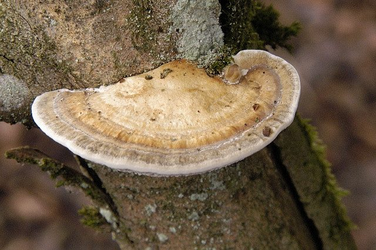

ब्रैकेट कवकThin-walled Maze Polypore
Daedaleopsis confragosa · Polyporaceae · FNG-0037

- Scientific name वैज्ञानिक नाम
- Daedaleopsis confragosa (Bolt.) J. Schröt.
- Family कुल
- Polyporaceae
- Hindi हिंदी
- ब्रैकेट कवक
- Local names स्थानीय नाम
- bracket fungus, maze polypore, daedaleopsis
- Status here यहाँ की स्थिति
- native
- Movement आवागमन
- Resident, here all year
- Known from कहाँ दर्ज
- Others have published records from the Basti–Ayodhya districts बस्ती–अयोध्या के ज़िलों से दूसरों के प्रकाशित अभिलेख
- IUCN IUCN
- not evaluated
- Review समीक्षा
- audited and independently read
When to look कब देखें
Expected mainly in September, October, November, December, January, February, March, April. मुख्यतः सितंबर, अक्टूबर, नवंबर, दिसंबर, जनवरी, फ़रवरी, मार्च, अप्रैल में अपेक्षित।
Uses and possibilities उपयोग और संभावनाएँ
Drawn from the documented uses in the profile below, where each is labelled traditional, current or a research lead. All uses →
ब्रैकेट कवक / Thin-walled Maze Polypore
Daedaleopsis confragosa (Bolt.) J. Schröt. — Polyporaceae
ब्रैकेट कवक — पुरानी लकड़ियों पर उगने वाली बड़ी ब्रैकेट (सीढ़ी जैसी) कवक। इसका नीचे का हिस्सा एक भूलभुलैया (maze) जैसा दिखता है, जिसमें पतली-पतली दीवारें हैं। यह मृत लकड़ियों को तोड़-फोड़कर (decompose) मिट्टी में बदल देता है, जिससे जंगल में नई मिट्टी बनती है। नदियों के किनारे गिरी लकड़ियों पर इसे अक्सर देखा जा सकता है।
Quick Identification त्वरित पहचान
| Feature | Description |
|---|---|
| Fruit body shape | Shelf-like or bracket-shaped; sessile (no stalk); attached directly to wood |
| Size | 5–20 cm wide, 2–10 cm deep, up to 2 cm thick |
| Upper surface color | Whitish-grey to tan or reddish-brown; often with concentric zones |
| Upper surface texture | Velvety to smooth; may have radial grooves |
| Lower surface (pore surface) | Thin-walled maze-like structure; pores are angular, elongated, 1–2 mm; pale cream to tan |
| Flesh color | White to pale tan; tough and woody |
| Smell | Faint, pleasant, woody odor |
Field tip: Look on fallen or dead logs in woodlands, particularly near water. The shelf-like fruiting bodies extend perpendicular to the wood. Flip it over: the underside shows a distinct maze-like pattern of thin walls, not regular round pores.
हिंदी — कैसे पहचानें: पुरानी लकड़ी पर सीढ़ी जैसी कवक। नीचे भूलभुलैया जैसा खांचा। सफेद-भूरा रंग। नदी के किनारे गिरी लकड़ियों पर।
Morphology and Symptomatology आकृति और लक्षण
Fungal structures:
| Structure | Appearance |
|---|---|
| Context (flesh) | White, corky, woody; non-fragile |
| Hymenium (spore-bearing layer) | Thin-walled maze-like structure; thin dissepiments (walls) 1–2 mm wide |
| Pores | Labyrinthine (maze-like), angular, elongate; not regular circular pores |
| Basidiospores | Hyaline, cylindrical to oblong, 8–10 × 2.5–3.5 µm |
| Growth ring | Annual growth rings visible on the side; each year adds a layer |
Ecology:
Daedaleopsis confragosa colonizes dead hardwood (logs, stumps, fallen trees). It breaks down the complex polymers (lignin and cellulose) of the wood, returning nutrients to the ecosystem. This is a saprotrophic (decomposer) fungus essential for nutrient cycling in woodlands.
Life Cycle / Phenology जीवन चक्र
| Stage / Season | Event | Notes |
|---|---|---|
| Year 1 | Spore lands on dead or dying wood; mycelium colonizes wood | Colonization is slow; no visible fruiting body |
| Year 2–3 | Mycelium spreads throughout wood; fruiting body initiates | Hyphal network becomes established in sapwood and heartwood |
| Fruiting | Bracket emerges from wood surface; releases spores into air | Can fruit repeatedly, multiple times per year in moist conditions |
| Annual renewal | New layer of wood added; bracket grows larger | Growth rings accumulate; bracket may persist for many years |
Ecology and Substrate पारिस्थितिकी और आधार
Wood decomposer: Daedaleopsis confragosa is a white-rot fungus that degrades both lignin and cellulose, breaking down woody substrates into humus.
Moisture and temperature requirements:
- Optimal: Cool, moist conditions; 10–20°C
- Fruiting: Most prolific September–April (cool, wet season); can fruit year-round in moist environments
- Substrate: Prefers hardwoods (birch, elm, willow); less common on conifers
- Decayed wood stage: Colonizes logs and stumps in advanced stages of decay
Host specificity: Primarily hardwoods; particularly associated with birch and mixed hardwood forests in cool climates.
Ecological role: Essential decomposer in woodland ecosystems; breaks down woody detritus and returns nutrients to soil.
Agricultural / Human Relevance कृषि प्रासंगिकता
Ecological importance:
Daedaleopsis confragosa has no direct agricultural use or harm. It is a natural part of forest ecosystems, breaking down dead wood and facilitating nutrient cycling. It may appear on cut timber or firewood, where it plays a beneficial decomposition role.
Research interest (a lead, not a result): Basidiomycete fungi like Daedaleopsis confragosa are studied for their enzymatic machinery (cellulases, laccases) used in wood decomposition; these enzymes have potential applications in biofuel production and waste management.
हिंदी — प्रासंगिकता: यह कवक पुरानी लकड़ियों को मिट्टी में बदल देता है। जंगल में नई मिट्टी बनाने में मदद करता है। इसका कोई सीधा उपयोग नहीं, पर जंगल के लिए बहुत अहम है।
Expected Locally स्थानीय रूप से अपेक्षित
Not a field record. Written from published accounts for eastern Uttar Pradesh. No confirmed local sighting yet — if you have seen it, that is what the atlas needs.
अभी तक स्थानीय पुष्टि नहीं। यह विवरण प्रकाशित स्रोतों से है, किसी अवलोकन से नहीं।
Daedaleopsis confragosa is expected on fallen or dead hardwood timber in moist woodlands and riverine forests of Basti and Ayodhya districts. Particularly likely on logs and stumps in ravines and along river valleys where hardwoods (birch, elm, willow) occur. Most visible September–April. A photograph of the fruiting body showing the maze-like pore surface with date and location would confirm a local record.
Distribution वितरण
Global range: Temperate and subtropical regions worldwide; particularly common in cool, moist climates.
In India: Found in the Himalayas and northeastern hill regions; rare to scattered in the plains.
In Uttar Pradesh: Occasional in moist woodlands; more common in eastern UP and the Himalayan foothills.
In Basti district / eastern UP: Expected in riverine woodlands and moist ravines; scattered occurrence.
Research Questions शोध प्रश्न
- On which tree species (birch, elm, willow, or others) is Daedaleopsis most commonly found in your area? — Survey dead wood in local woodlands; record host species.
- How long does a single bracket persist on a log? — Mark fruiting bodies; photograph monthly to assess lifespan.
- How quickly does a fallen log colonized by Daedaleopsis decompose compared to uncolonized wood? — Examine decomposition rates of similar logs with and without the fungus.
- What other fungi and insects colonize wood alongside Daedaleopsis? — Examine a single log; document all fungi, insects, and organisms present.
Similar Species मिलती-जुलती प्रजातियाँ
| Species | How to tell apart | हिंदी |
|---|---|---|
| Cerioporus squamosus (Dryad's Saddle) | Regular round pores, not maze-like; fruiting body more delicate | गोल सुराख़, नाज़ुक |
| Trametes species | Thin shelf-like brackets but with regular round pores; harder, more leathery | पतली सीढ़ी, पर गोल सुराख़ |
| Other Daedaleopsis species | Very similar; identification often requires microscopy | माइक्रोस्कोप से पहचानें |
Field rule: Thick, woody shelf-like bracket with maze-like (labyrinthine) thin-walled pores underneath, on dead hardwood = Daedaleopsis confragosa.
Taxonomy & Classification वर्गीकरण
Original description. Originally described as Boletus confragosus by Bolten in 1788; transferred to Daedaleopsis by Schröter in 1889.
Subspecies. No subspecies recognized.
Family and order placement. Order Polyporales, family Polyporaceae. Daedaleopsis is a genus of shelf fungi with maze-like pore structures.
Phylogenetic notes. Daedaleopsis confragosa is closely related to Cerioporus (previously Polyporus); molecular studies confirm its placement in Polyporaceae.
Ecological role: White-rot decomposer of hardwood; essential for nutrient cycling in forest ecosystems.
Photo Gallery फोटो गैलरी
Photos needed आवश्यक फोटो
- [ ] Fruiting body on fallen log showing bracket structure (गिरी लकड़ी पर कवक)
- [ ] Underside showing maze-like pore surface (नीचे का भूलभुलैया)
- [ ] Close-up of pore structure (सुराख़ों का बड़ा रूप)
No photos yet — add field photos to media/species/thin_walled_maze_polypore/ and run node scripts/sync_photos.js.
References संदर्भ
- Bolten, J.F. (1788). Fungorum in agro Halberstatiensi. [original description as Boletus confragosus]
- Schröter, J. (1889). Kryptogamen-Flora von Schlesien, vol. 3, part 1. [genus Daedaleopsis]
- Ryvarden, L. & Gilbertson, R.L. (1993). European Polypores, vol. 1 & 2. Fungiflora, Oslo.
- Breitenbach, J. & Kränzlin, F. (1986). Fungi of Switzerland, vol. 3. Mykologia, Luzern.
- GBIF Occurrence Data — Daedaleopsis confragosa, Asia (2025).
- Agrios, G. N. (2005). Plant Pathology. 5th ed. Academic Press, Burlington.
Source file: species/fungi/bracket_fungi/thin_walled_maze_polypore.md